The Psy-Ops Building

The coolest building I visited at Fort Hayes was also the most dangerous, and the most difficult to get into: the Psy-Ops building. As you can see, it's been sealed up very well, and getting in required the prying-off of the board over a basement window. Also, it's located right next door to the Reserve post, and within plain sight of Cleveland Avenue. When Rookie and I returned to the building, the place where I had gotten in before had been resealed--a sure sign that somebody's paying attention.
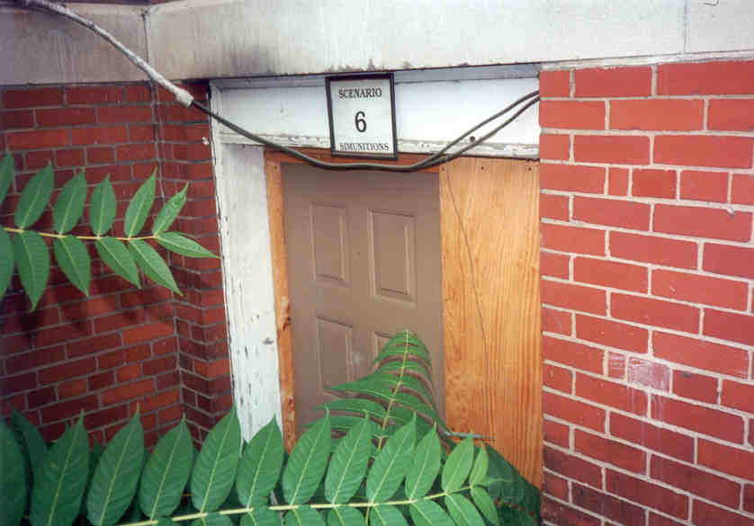
Why is it so closely guarded, and so cool? Because for the past couple of years (judging from dates found on papers inside), the Columbus Police have been using this building to train police officers in psychological operations. Whatever its original use was, it's been transformed into a kind of life-sized video game, with rooms made up to look like different scenarios a cop might run into in the line of duty: living room, office, etc. They train in here to make sure they're able to keep their cool in a high-pressure situation, and don't accidentally shoot any white people. (Take a look at the Columbus Police Department's record on civil rights).
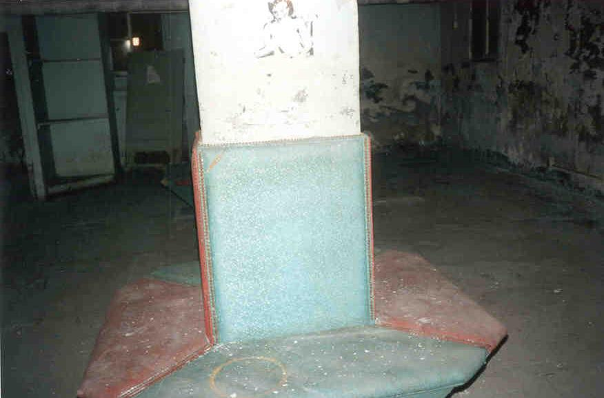
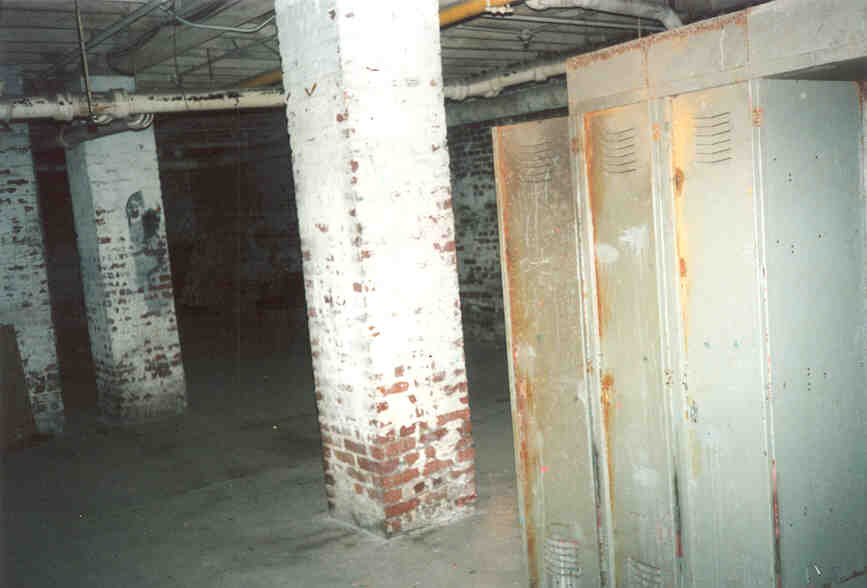
The Basement
With two floors and a basement, there was a lot to explore. Water sometimes stands in the basement, but it never seemed very deep. Power was provided by a complex system of extension cords run throughout the building from somewhere else, but there was no sign that the power was on. A ruined set of lockers in the basement bore the dents and faded stains of paintball games.
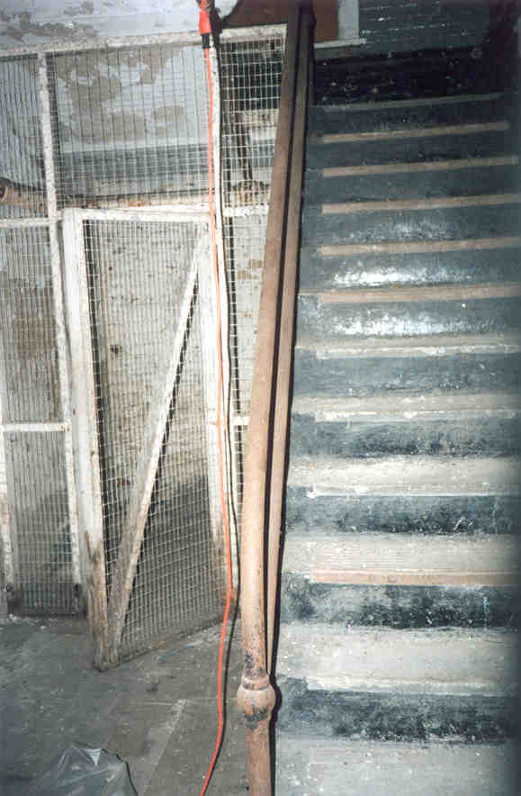
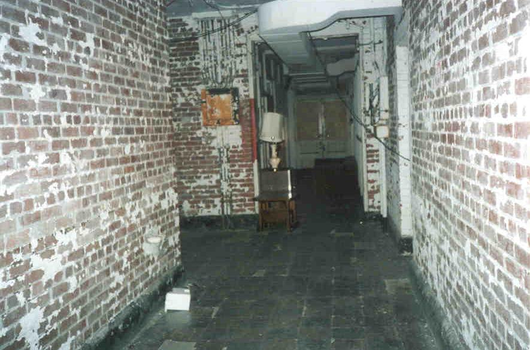
Upper Floors
On the first floor we found the room where the cops apparently met and regrouped after a run-through. Extra furniture was stored here. There were empty boxes of the ammunition they used lying around--"Simmunition," each one a special bullet tipped with a hard plastic paint tube. Real guns are apparently modified to take these sim bullets, and I imagine they'd do more than just sting when they hit you. I'm sure the cops put on all their gear when they're training. Also in this room were grade sheets for the trainees, who got points for such qualifications as "Assertiveness" and "Search/Escort." On the back of one a participant had drawn a rough diagram of how they would storm the scenario.
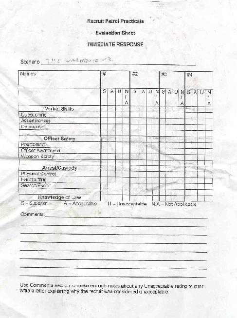
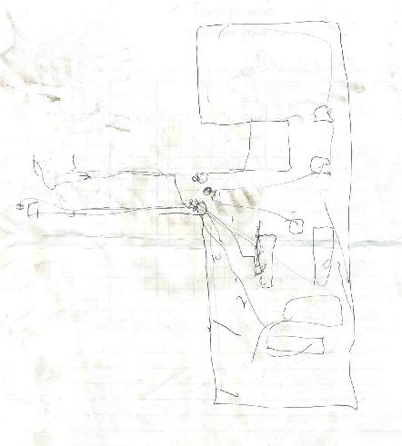
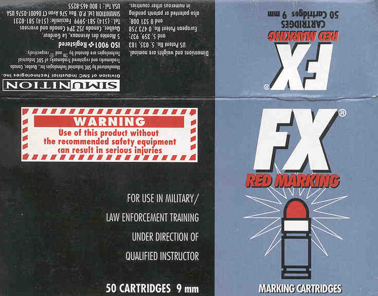
There was also a certificate of completion for an officer named John Jones, but he apparently either forgot to grab it or got kicked out before he could finish.
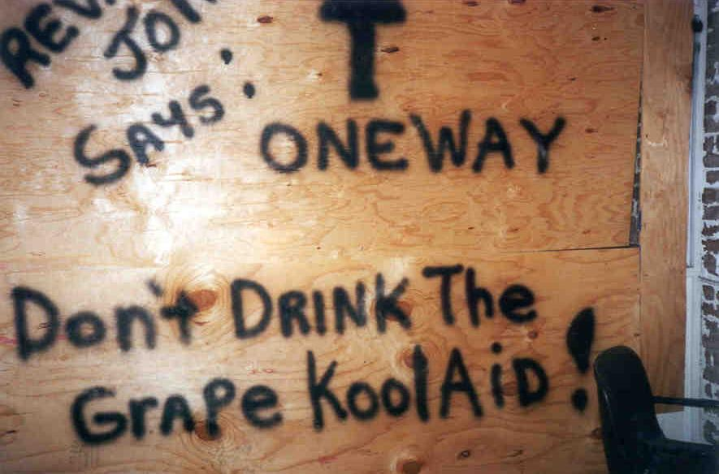
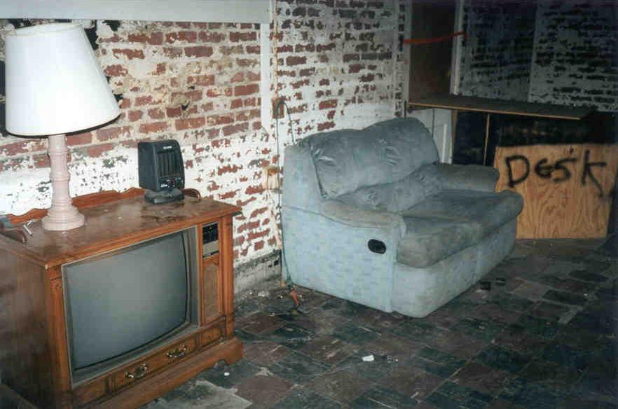
Scenario One
Each of the training courses was labeled at its beginning with a number, and the first Scenario was obviously that of a compound of some sort. The spray paint on the wall said "REV. JONES SAYS DON'T DRINK THE GRAPE KOOL-AID," which we took to be a reference to Jonestown, and the set-up was sort of odd: the front room was set up with a receptionist's desk with two offices behind it, and then to the right it continued into a sort of lounge area, followed by another room with tables and desks inside. On one of the tables in the back room we found a scuffed and homemade-looking knife. Another sign had a "Kilroy was Here" drawing, and said "WE ARE WATCHING." The cops probably had to practice storming a compound full of crazy cultists who tried to kill them with knives--and maybe guns of their own. Of course, I could be completely wrong.
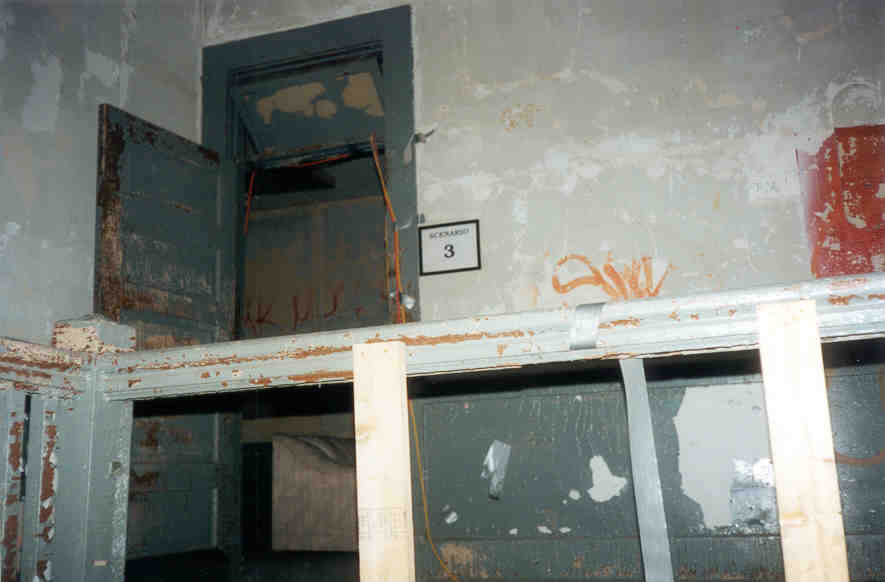
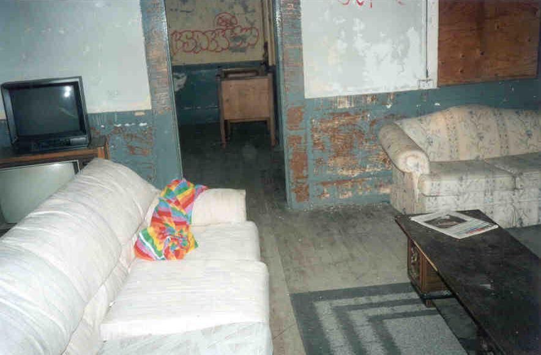
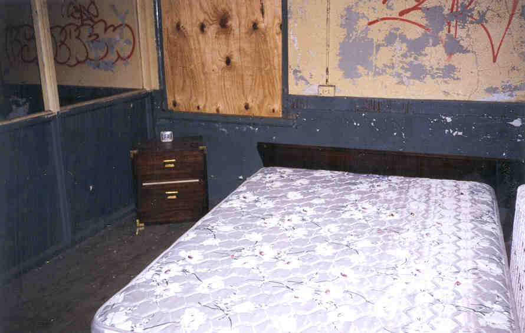
Scenario Three
Scenario three was at the top of the stairs on the second floor, and it was obviously supposed to be someone's house or apartment: a fake living room, followed by a dining room, and then a bedroom. The way the whole thing was made up was fascinating; it was like a real living room, except for the fact that the walls were barren and stripped, and that some of the desks and things were made out of plywood. Kind of like the set for a play--everything's there, but it's still not quite right.
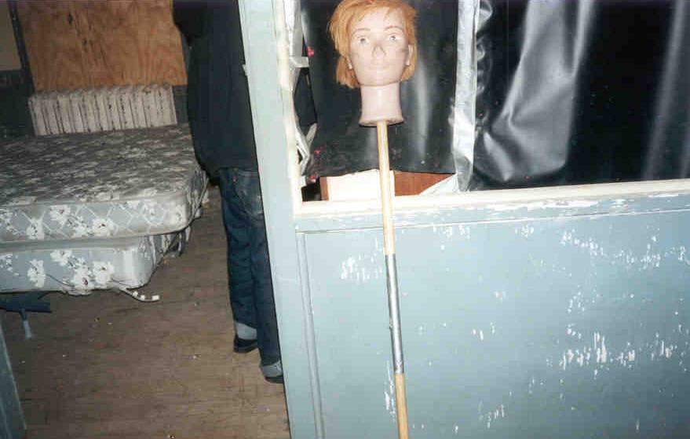
The dining room featured a table with chairs, and the bedroom had a bed complete with box springs and a cover sheet. We also discovered the quite startling mannequin head on a stick which you see above. I guess they poked it around the corner to make sure nobody shot it. On my second visit to this building the head had been moved to Scenario Two.
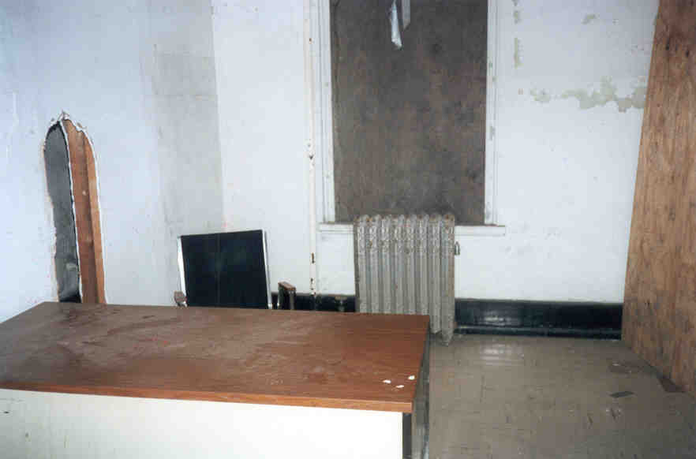
Other Scenarios
Down the hall was the second scenario, which apparently had an office setting. There's a front office, then a back office, then a short hallway to a bathroom and a third office. The desks have old computer monitors without hard drives and mice that aren't plugged in.
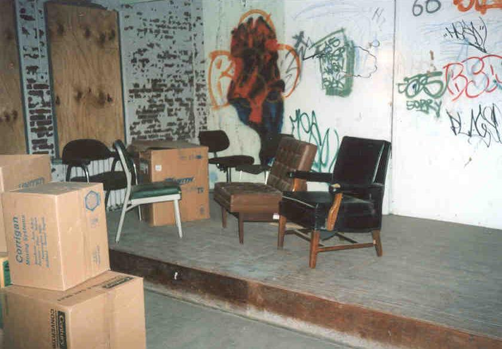
In another section we discovered yet another scenario--this one two rooms in size, with a lot of big cardboard boxes piled up for the bad guys to hide behind. Hard to say what that could have been simulating--could be lots of different things.
Overall, a really awesome thing to see. I only wish I knew more about the history of the building. Right now it might still be used, but bear in mind that somebody cares about this building, so if you go, bring bail money.
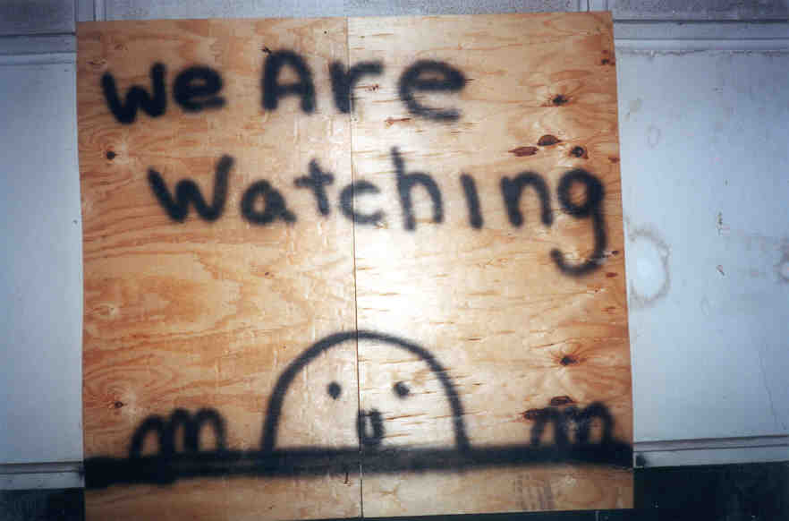
Back